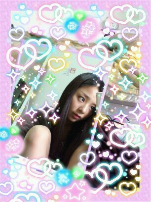

| 2012/04 17 Tue | 川村真洋 ２つに分けて質問返し?, ろってぃー♪ |
皆様からの質問を夜中
一気にノートに写しましたっ(*^^*)
途中半分寝ちゃってたから
間違ってても許してねっ*^^*笑
てへっ♪
一気にいっちゃるでぇ〜い(＾＾)/

↑鏡の後ろで、
赤紫のたいつさんが
暴れてたから隠したつもりです☆笑
3/29
■シャンプー何使ってる？
□Amicalというサイズの
大きいシャンプーです♪
■「おん」と「たっくん」は
何で使うようになった？
□知らない間に自分しか
使ってない言葉ができつたり
お姉ちゃんがオモロイ人で
言葉うつったりするんです♪
■今現在の目標は？
□バラエティー番組で
アフリカに行って
色んな動物達と触れあいたいなぁ♪
■和菓子だと何が好き？
□つぶあん♪
■アップにしたヘアスタイル
見たことない気がするの
気のせいかなぁ？
□確かにまだ皆さんの前で
したことないねっ><
■4月からはどんな
意気込みでいく？
□自分磨きだっ♪頑張るんだから！
■食パンにバター、
塗ってから焼く派？
焼いてから塗る派？
□塗ってから焼くに
きまっちょーる^^
■newsの曲聴いたことある？
□自分でnewsさんの
CDを買ったりしたことは
ないですけど、
TVで見たりして曲を
聴いたりしたことは
ありますっ^^♪
■NARUTOで好きなキャラは？
□いっぱいいるけど
一番好きなんはナルとです!
ガアラやカカシ先生、
しかまる、ジライヤとかね..
ジライヤは死んぢゃいけないってば...
■AKBの推しメンは？
□決めれないよぉ(T-T)
全員だよう♪
■色白の男は好き？
□好きだよっ♪
■ろってぃーはボーイッシュかな？
□ボーイッシュとは
言われたことないよん^^
■せんとくん好き？
□好きよ^^
肌茶色だから
せんとくんのぱぱさんは
黒人さんやったりしてね＾ω＾
■ワシみたいなオジサンが
握手会来ても嬉しいか？
□めちゃくちゃ嬉しいっ^ω^
3/31
■仕事終わって携帯
開けた瞬間ろってぃーblog♪
これって運命かな？
□すっご〜い(⌒‐⌒)
それは運命ぢゃぁぁ♪
■わーちゃんのこと分かったかな？
□コメントしてくれていたから
分かったよ(*^^*)
■明日、サッカーの公式戦が
あるのに寝れない。
緊張してるのかなぁ？
□そうゆう時あるよね(ノ_・。)
次また緊張して
寝れない時があれば
いつでもゆってね＾＾
願っとくからさ..ω
■握手会やイベントに
行けないけどファンでいて
いいですか？
待っててくれますか？
□何言ってるのですか>_<。
握手会やイベントに
来てくださる方だけがファン!
だとか思ったことないですよ＾ω＾
握手会等に行けなくたって
応援してくださる方の全員が
まひろにとっての
大事な宝物なんだから〃ω〃
■名前覚えててくれて
ありがと。まだ覚えてるかな？
□覚えてるさっ♪
次会った時まひろ
覚えてなかったら
しっっかぁ〜りっ!
覚えるまでしつこく言い続けて
くださいっ>ω<!笑
■握手会の時ずっと
立ちっぱなしだけど
疲れてない？大丈夫？
□皆様と握手してたら
足が疲れてるもなんも
感じないんだからねっ(*・ω・*)
■オーバーオールと靴は
どこのですか？
□全然覚えてないんだけど、
まひろオーバーオール大好きで
大阪に居るときは
心斎橋にあるアメリカ村で
オーバーオールやTシャツ
帽子、リュックを
買っていたよ＾＾♪
■AKBの振り付けだと
どんなのが好き？
□riverだとかbeginnerです♪